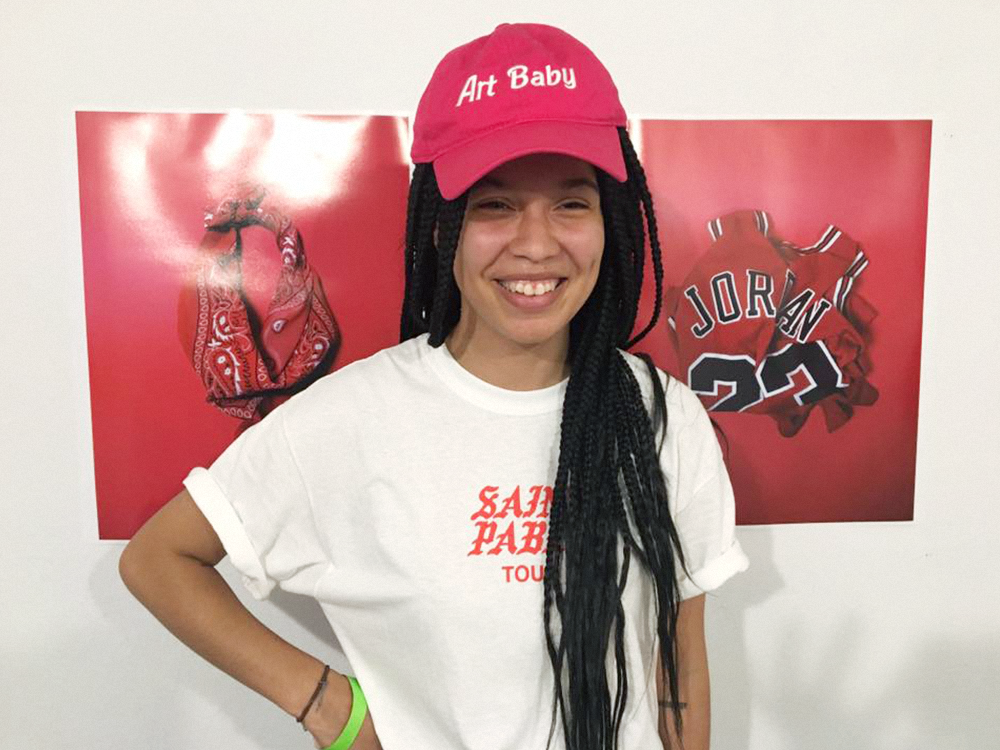
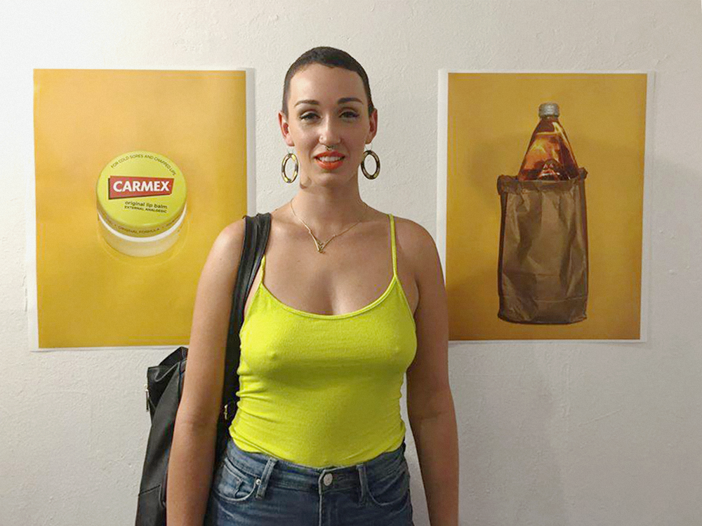

Everyday Things is a tongue in cheek solo exhibition by intermedia artist Megan Tatem. Featuring a series of culturally suggestive photographs, Everyday Things provides social commentary on the hidden politics of racial stereotypes while also concealing its own agenda in a clever cocoon of relevant rhetoric and latent sarcasm. Everyday Things toys with the concept of cultural association and how we apply them during our everyday lives. This exhibition is about the art of perception, the art of analysis. Everyday Things allows the audience to come to their own conclusions while also making them aware of the nature of those very conclusions. Words by Akeem Duncan
 